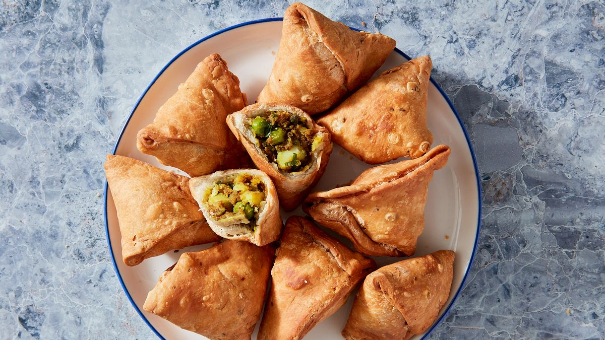

Pedro's DEATH ROW menu: Samosas
an Odin Project assignment

Description:
A samosa is a fried South Asian pastry with a savoury filling, including ingredients
such as spiced potatoes, onions, peas, meat, or fish. It is made into different shapes,
including triangular, cone, or crescent, depending on the region. Samosas are often
accompanied by chutney, and have origins in medieval times or earlier. Sweet
versions are also made. Samosas are a popular entrée, appetizer, or snack in the
cuisines of South Asia, the Middle East, Central Asia, East Africa and their South
Asian diasporas.
Ingredients
Dough:
- 1 1/2 cups flour , plain/all purpose
- 1 tsp ajwain seeds
- 1/2 tsp salt , cooking/kosher
- 4 tbsp ghee (melted and cooled) or oil (any vegetable)
- 6 tbsp water (cold tap water)
Potato Filling:
- 500g/1 potatoes , starchy/all-rounder
- 2 tbsp vegetable/canola oil
- 1 tsp cumin seeds
- 1/4 tsp black mustard seeds
- 1/2 tsp coriander seeds
- 1 tbsp fresh ginger , finely grated
- 1 tbsp green chilli , finely chopped (serrano or cayenne)
- 1/2 cup frozen green peas (thawed)
- 1 tsp garam masala
- 1/4 tsp amchur
- 1/2 tsp asafoetida
- 1/4 tsp cumin powder
- 1/2 tsp turmeric powder
- 1 tsp salt , kosher/cooking
- 2 tbsp coriander/cilantro leaves , finely chopped
Frying:
Vegetable/Canola oil for frying (at least 1 litre/1 quart)
Serving:
Tamarind Dipping Sauce
Yield: 12 Samosas
Steps
Potato Filling
- Boil potato until soft: Peel then cut potatoes in half. Place in a pot of cold water, bring to
boil then cook until very soft, ~10 minutes.
- Mash roughly: Remove the potatoes onto a plate and roughly mash with a fork, leaving some
large chunks (we want some textural interest)
- Cook spice seeds: Heat oil in a large skillet over medium heat. Add the cumin seeds,
mustard seeds & coriander seeds. Stir the spices for about 30 seconds or until fragrant
- don't let them burn!
- Add the ginger, chilli, peas and continue to stir a further minute or so until the chilli is soft.
- Add remaining spices: Add the garam masala, amchur, asafoetida, cumin powder, turmeric
and salt. Cook a further 30 seconds.
- Add potato and gently stir to coat in spices for about 1 minute.
- Cool: Remove from the stove, stir in chopped coriander leaves. Spread potato mixture out
on a plate and let it cool completely before using.
Samosa Dough:
- Mix dry ingredients: Place the flour, salt and ajwain seeds into a bowl and stir to combine.
- Rub ghee into flour: Add the ghee or oil and mix with your fingertips until the dough
resembles breadcrumbs. (This step is key to making flaky samosa pastry.)
- Form a ball: Add the water and mix with the flour until you form a ball of dough. It should be
pliable and soft, but not so sticky it sticks to your hands.
- Rest 30 minutes: Cover the dough in the bowl with glad wrap and leave to rest for 30 minutes.
Making the Samosas:
- Cut into 6: Cut the dough into 6 equal portions, then roll each into a ball. Keep the balls on a
plate covered with cling wrap so they don't dry out.
- Place between paper: Place one ball on a sheet of parchment/baking paper. Press down to
flatten, then cover with another sheet of paper. Do not flour the work surface - it will dry the
pastry out.
- Roll out: Roll the dough into a disc about 2mm / 1/10" thick (~16cm /6.5” diameter).
- Cut in half: Cut through the centre to create two semicircles (2 samosas per disc).
- Make cone: Brush the straight side with water, then fold straight edge to join itself and
form a cone. Overlap the edges by about 1 cm / 2/5" then press edges to seal.
- Fill with potato: Make an "O" with your forefinger and thumb, then hold the cone in the "O".
Fill with about 2 tbsp of Potato Mixture, lightly pressing in.
- Seal: Brush the open pastry edge with water, then press together so your Samosa is fully sealed.
Place sealed edge down on work surface and press down to fold. Trim off excess
pastry, fold in corners. Pinch the top corner to make it pointy.
- Repeat with remaining Samosas - you should make 12 in total.
Frying:
- Heat oil to medium: In a deep pan or pot, heat 5cm / 2" oil to 160°C/320°F.
- Fry 1: Carefully drop 3 - 4 samosas in the oil and cook for 3 minutes, moving them around
occasionally (if they touch the base of the pot for too long, they get brown spots).
- Drain and repeat: Remove from the oil and drain on paper towels. Repeat with the remaining samosas.
- Increase oil heat: Increase the oil temperature up to 190°C/375°F.
- Fry 2: Carefully place 3 - 4 samosas at the time into the oil, and cook for 1 1/2 to 2 minutes
until they are deep golden. Remove from the oil and drain on paper towels. Repeat with
remaining Samosas.
- Serve hot with Tamarind Sauce or a Mint Raita.
Nutritional Information
- Calories: 190cal
- Carbohydrates: 14g
- Protein: 2g
- Fat: 14g
- Saturated Fat: 11g
- Cholesterol: 13mg
- Sodium: 297mg
- Potassium: 42mg
- Fiber: 1g
- Sugar: 1g
- Vitamin A: 54IU
- Vitamin C: 3mg
- Calcium: 8mg
- Iron: 1mg
Back to Homepage ->
More dishes on Pedro's DEATH ROW: menu:
Bacalhau à brás | Strawberry Cheesecake